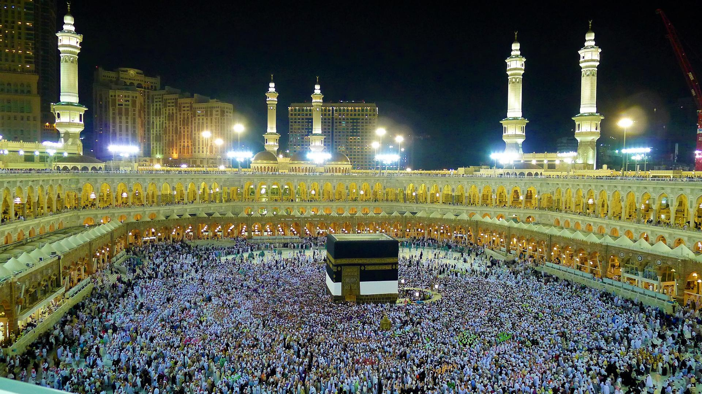

Umrah · Accessibility Guide
Umrah for Elderly & Disabled — Wheelchair, Facilities & Tips

Age and disability are no barrier to Umrah. The Two Holy Mosques run some of the most complete accessibility services of any religious site in the world: free wheelchairs around the clock, bookable electric carts, step-free routes and dedicated lanes, all arranged so that an elderly parent or a pilgrim with limited mobility can complete every rite with dignity. This guide gathers what is available in Makkah and Madinah, what it costs, and the practical tips that make the journey easier. If this is also your first Umrah, read it alongside our Umrah for First-Timers guide.
Free manual wheelchairs, day and night: Inside Masjid al-Haram, manual wheelchairs are free, 24/7, from service counters near the major gates, including the King Abdulaziz Gate, Gate 74 and the Ajyad Gate. They are for use inside the mosque only and must be returned to a counter when you finish; a family member or companion does the pushing. Step-free access is built in: 32 gates have ramps, among them gates 68, 74, 79, 84, 89, 90, 93 and 94.
Electric carts through the Tanaqol app: The powered option is booked through Tanaqol, the official app of the General Authority for the Care of the Affairs of the Two Holy Mosques. The current prices are:
- Full Umrah (Tawaf and Sa'i): 300 SAR
- Tawaf only: 50 SAR
- Sa'i only: 50 SAR
- Pilgrims aged 65 and over: 50% off, so a full Umrah costs 150 SAR
- Free for people with verified disabilities and for children under six
Pickup and drop-off points are at Al-Marwah (Gate 25), Al-Arqam (Gate 16), Ajyad (Gate 5) and Al-Shabika (Gate 66), and for Tawaf itself, golf carts run on the Mataf roof. Prices can change, so confirm in the Tanaqol app before you go.
Tawaf and Sa'i in a wheelchair:
- Sa'i has a dedicated middle wheelchair lane running between Safa and Marwah, away from the fastest walkers.
- Upper-floor Tawaf is calmer and far less crowded than the ground-floor Mataf, and the upper floors are reached by lift and escalator.
- A free cart-loan service operates at exits 309 and 343.
- An official wheelchair-pusher service works at the entrances. Use the official counters only, and politely decline unauthorised pushers who approach you.
In Madinah: Masjid an-Nabawi holds more than 2,500 free mobility carts, issued through the Doors Management Office, so wheelchair help in the Prophet's Mosque is just as organised as in Makkah. Book the Rawdah slot itself through the Nusuk app, exactly as our Nusuk App Guide and Rawdah Permit guides explain.
Renting a chair privately: Private companies rent out electric wheelchairs with hotel delivery at roughly SAR 100 to 120 per day, or about SAR 700 per week. On a longer stay this can be simpler than collecting and returning a mosque chair every day. Prices vary by company and season, so confirm before you book.
Practical tips from experienced families:
- Travel in the mild months. November to February brings the gentlest weather; our Best Time to Perform Umrah guide compares the seasons.
- Rest between the rites. Sit for 15 to 20 minutes and drink Zamzam between Tawaf and Sa'i instead of pushing straight on.
- Choose the hotel by distance, not by stars. A simple hotel close to the Haram is worth more than a grand one far away: every metre saved is energy saved. Our Umrah Packing List covers the small things that help on the road.
- Carry medicines in your hand luggage, together with a doctor's note explaining them, and keep the note with your passport and visa papers (see Umrah Visa 2026).
- Take the Haramain train between Makkah and Madinah: about 2 hours, against roughly 5 hours by coach, and far kinder on an elderly traveller.
Quick questions:
- Is Tawaf in a wheelchair valid? Yes. The Prophet ﷺ performed Tawaf riding his camel (Sahih al-Bukhari 1633), and scholars hold that Tawaf performed seated, in a wheelchair or an electric cart, is valid for whoever needs it. For the details of your own case, ask a qualified scholar.
- Where do I get a free wheelchair in Masjid al-Haram? From the service counters near the major gates, including the King Abdulaziz Gate, Gate 74 and the Ajyad Gate. The chairs are free and available 24/7, for use inside the mosque only, and must be returned; a companion does the pushing.
- How much do the electric carts cost? Through the Tanaqol app: 300 SAR for a full Umrah, 50 SAR for Tawaf only and 50 SAR for Sa'i only. Pilgrims aged 65 and over pay half (150 SAR for a full Umrah), and carts are free for people with verified disabilities and for children under six. Prices can change, so confirm in the Tanaqol app before you go.
Sources: General Authority for the Care of the Affairs of the Two Holy Mosques: Tanaqol electric cart service and the wheelchair services of Masjid al-Haram and Masjid an-Nabawi (prices as listed November 2026; confirm in the Tanaqol app before travel) · Sahih al-Bukhari 1633 — Sunnah.com ↗ · Quran 2:286